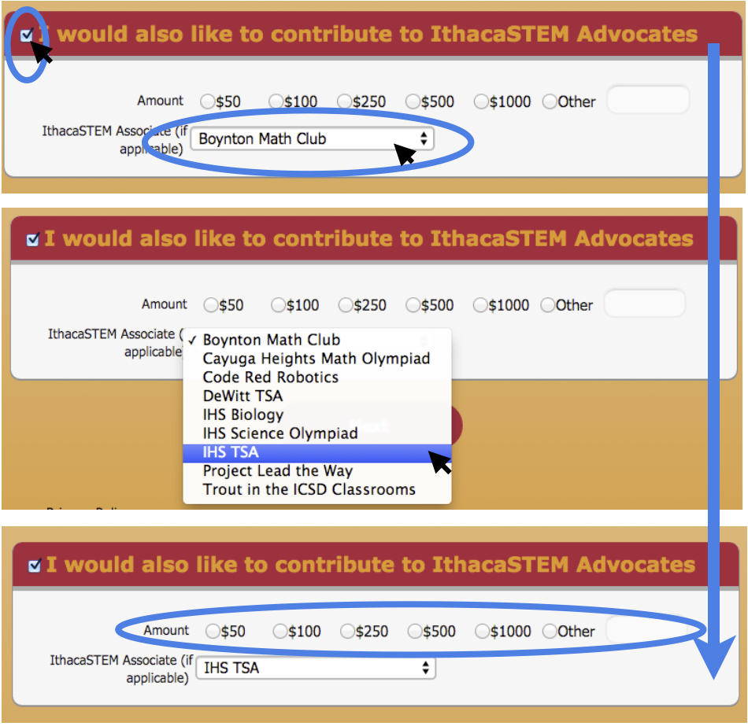

If you've landed here, you're probably at least thinking of donating to help us go
to the TSA National Competition. Thank you so much!

We're working on streamlining the process of donating. Currently, our system is through a great group known
as the IthacaSTEM Advocates, sub-division of a non-profit organization in Ithaca of IPEI
(Ithaca Public Education Initiative)that, among other things, helps students in STEM clubs get funding.
Because IPEI has a 501(c)(3) account, the donation is tax-deductible.

Information for donating via sending a check in the mail can be found at [Donate to STEM](https://www.ithacastem.org/membership/donate).

If you'd like to donate online, follow
[Donation Information](https://interland3.donorperfect.net/weblink/weblink.aspx?name=E130565&id=2) to IPEI's donation page.

Scroll all the way to the bottom and select the IthacaSTEM Advocates box, and make sure to select "IHS TSA"
from the list of organizations and clubs. Then, select or type in the amount you'd like to donate.  

*This image should be revealed via a mouseover with JavaScript of "I'm confused".*


Thank you so, so much! We look forward to the TSA National Competition, and thanks to you, we'll be able to go!